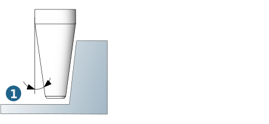

Tools
Supported tool types: Ball mill, end mill, bullnose end mill, lollipop, indexable cutter with round inserts, indexable cutter with high feed inserts, T-Slot Cutter, Woodruff Cutter.
The Core Diameter, Core Height and Plunge Angle parameters control the plunge behavior of the tool during pocket machining.
The following rule applies: if the core diameter and core height values are both 0, the tool performs a center cut. If the plunge angle value in the job definition (see the Macros tab) is set to 0, the tool may not plunge. If, in the tool definition (under Technology, also see tool database, tool technology parameters), the Plunge angle value is defined as 0 but is set to 2 in the job definition (see the Macros tab), the value is colored red and the following message is displayed:
Macro plunge angle should be smaller than tool plunge angle.
If you ignore this message, the value (2) defined on the Macros tab is automatically used in the calculation.
Bullnose end mill
When working with bullnose end mills, material ridges may remain standing because the infeed distance is always based on the total tool diameter (1).
Consider corner radius (2): the infeed (stepover) distance is based on the tool's inner shank (= shank diameter - 2x corner radius), thus avoiding material ridges.
 |
Tapered tools
Tapered tools are supported. Please note that the cone of the tool does not depend on the Chamfer length; instead, it is defined using the Cone angle (1).
|  |